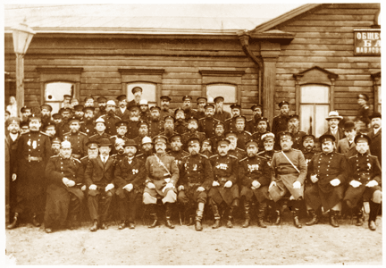

Chapter 6
Peasant Jurisprudence

Policemen and firemen with the provincial administration, in front of the Society Bank building, Pavlovskii posad, Moscow Province, 1910.
From the collection of Mikhail Zolotarev.
What happened in township courtrooms mattered to the outcome of cases and to legal culture in the Russian countryside. This chapter of RUSSIAN PEASANTS GO TO COURT explores the ways that decisions were made, the role of judges, clerks, and officials in legal process, and the connections of courts to village society. These issues are illustrated by materials on the site concerning policemen at certain courts, the sex of plaintiffs, the residence of parties to cases, the rate of plaintiffs' success in various kinds of cases and at various courts, the types of decisions in different types of cases, absences of parties and its role in decisions, judges' explanations of their decisions in civil cases, numbers of witnesses in kinds of cases, and the numbers and percentages of cases decided within a calendar year at various instances from 1905-1914.
For statistical calculations relating to litigants and case outcomes, see the displays in the separate section,
Statistical Analysis of Data.
Documents
Police as sole plaintiff
Plaintiff's sex in different township courts
Legal residence of plaintiffs and defendants
Chart of residence inside/outside township
Residence of parties, all cases
One or both parties reside outside township
Defendant's residence inside/outside township
Defendant's legal residence, by court
Plaintiff's residence inside/outside township
Plaintiff's legal residence, by court
Success of plaintiff in civil, criminal, and total cases
Success of plaintiff in civil cases
Success of plaintiff in criminal cases
Decisions in civil, criminal, and total cases
Charts of absence as explanation of decision by type of case
Table of absence as explanation of decision by type of case
Absence as explanation of decision by township
Explanations of decisions in civil suits
Number of witnesses by type of case
Percent of civil cases decided at Moscow courts
Percent of criminal cases decided at Moscow courts
Percent of total cases decided at Moscow courts
Cases decided and left undecided, Bogorodskii County
Cases decided and left undecided, Klinskii County
Cases decided and left undecided, Moskovskii County
Cases decided and left undecided, Zvenigorodskii County
Average number of cases decided/undecided in Moscow Province
Total number of cases decided/undecided in Moscow Province
Cases registered, decided, and undecided in Moscow Province, by county
© 2004 Jane Burbank, New York University
with permission from Indiana University Press
{kind=link}
{kind=link}
{kind=link}
{kind=link}
{kind=link}
{kind=link}
{kind=link}
{kind=link}
{kind=link}
{kind=link}
{kind=link}
{kind=link}